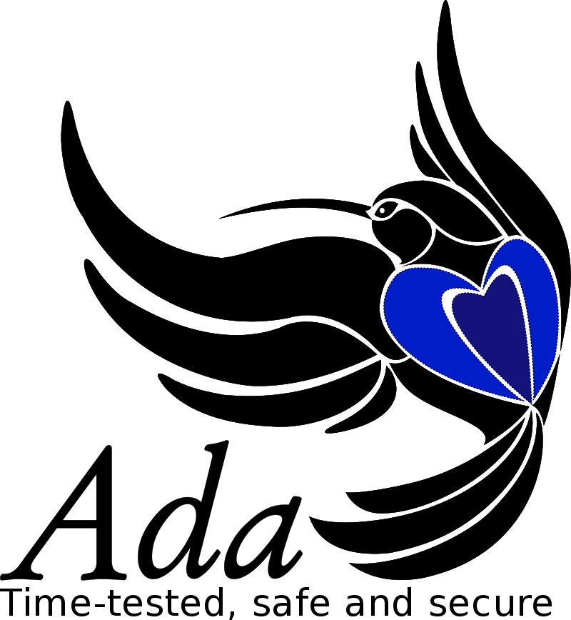
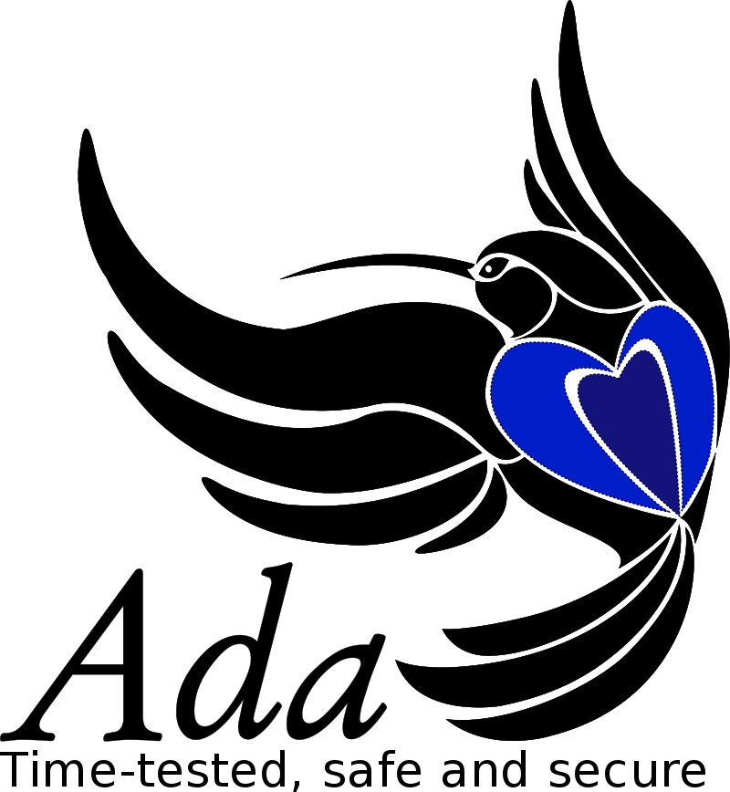

Trivia
At 12 years old Ada decided that she wanted to fly. She methodically researched the anatomy of bird wings to determine the necessary size and structure also considering the potential materials to use for such a project. In her pursuit she even decided to write a book named Flyology for her findings complete with illustrations. Babbage later nicknamed her "Lady Fairy".
 

The Ada programming language developed on behalf of the United States Department is named after her and the first edition 1815 was for the year of her birth.
Another of her nicknames from Babbage was the "Enchantress of Numbers".
She has numerous awards named after her including from the Association for Women in Computing the Ada Lovelace Award, the BCS's Lovelace Medal as well as an annual competition.